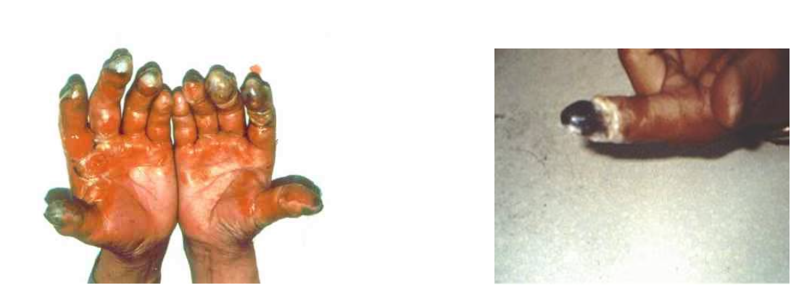
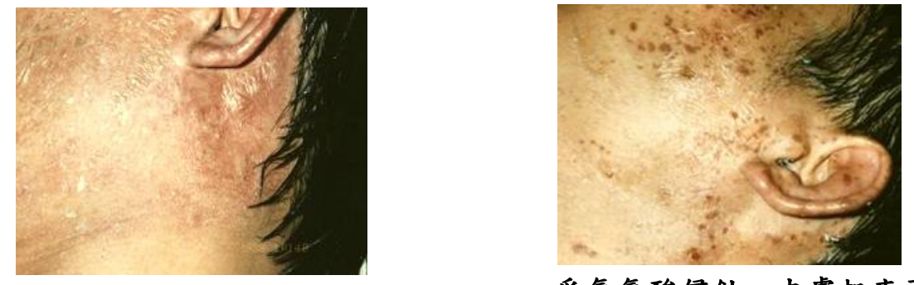
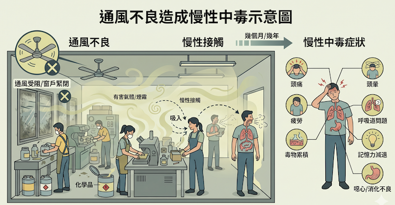
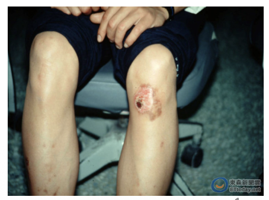
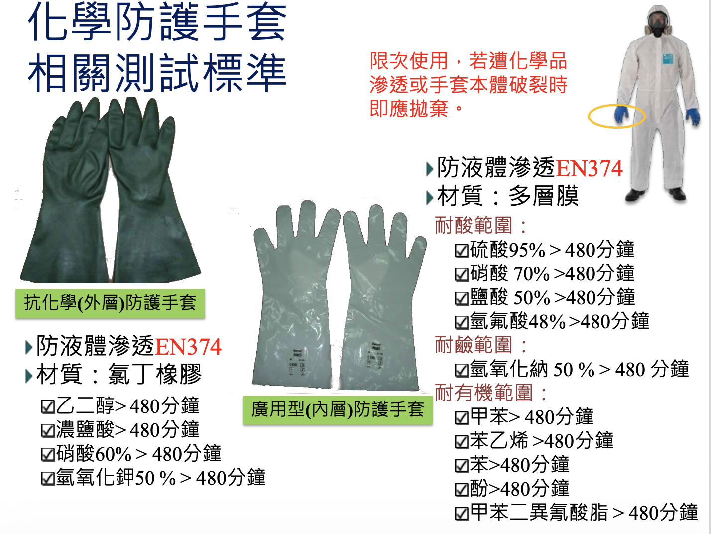

課程前言
實驗室是學術研究與科技發展的搖籃，然而化學有害物質的潛在威脅，卻是實驗室中最不容忽視的隱形殺手。從具備腐蝕性的強酸強鹼，到具有毒性的揮發性有機溶劑，一旦發生意外噴濺或誤食，往往會造成不可逆的生理傷害，甚至危及生命安全。
教育部的關懷： 教育部高度重視大專院校師生的工作與學習環境安全，安排此課程落實校園安全衛生自主管理，建立正確預防意識與應變能力。
安全不是負擔，而是對生命最基本的尊重。攜手建立「零災害」實驗室！
114年第四季校安通報事故分析｜數據透視
校安事故總量
學制分布 & 危害占比
※大專院校化學品複雜度與毒性遠高於其他學制，風險核心。
危害類型深入：有害物接觸警訊
「有害物接觸」佔比高達20%，平均每5件事故就有1件與化學噴濺、洩漏或誤觸有關。大專校園有害物接觸多為強酸（氫氟酸、鹽酸、硝酸）、有機溶劑，尤以氫氟酸HF造成後果最嚴重。
📊 關鍵：期末與研究衝刺期間，疲勞操作及忽略防護具導致有害物接觸案件上升32%。
校安事故趨勢對策與預防重點
事故類型前三位
- 滑倒/跌倒 (26%)
- 有害物接觸 (20%)
- 切割/穿刺傷 (15%)
有害物接觸中，HF、強酸及有機溶劑噴濺占67%，多發生於清洗、分裝、廢液處理階段。
預防行動矩陣
- ✅ 每月實施安全巡檢及洗眼器測試
- ✅ 強制GHS標示及SDS隨手可得
- ✅ HF特殊化學品強制雙人操作+專用急救箱
- ✅ 無責任通報系統，鼓勵即時通報
📈 數據比較：去年同季有害物接觸通報僅14%，今年因校安意識提升通報數增加，實際預防仍需加強工程控制及個人防護具遵從率，目標下降至10%以下。
真實案例深度解構｜氫氟酸案例
【案例一】HF化學灼傷事故
新竹某大學情境： 應化所碩士生清洗晶圓時遭50% HF噴濺右手，乳膠手套5分鐘即滲透，延誤葡萄糖酸鈣急救；另張姓碩士生清洗金屬板左腳被HF滴濺，10分鐘後才沖水，後續水泡抽筋，職業醫學門診證實低血鈣邊緣及深度組織纖維化。
- ❌ 防護材質錯誤（乳膠不耐HF）
- ❌ 未備葡萄糖酸鈣軟膏
- ❌ 低估HF延遲劇痛特性

案例一 延伸探討
🔬 深層病理與後果
氫氟酸氟離子與體內鈣、鎂結合，導致低血鈣、心律不整。暴露面積>1% (50% HF)即可能致命。張小姐案例顯示即使血鈣初期正常，4日後皮膚結痂伴肉芽組織生成，需長期追蹤。
葡萄糖酸鈣為唯一局部解毒劑，黃金時間內使用可避免骨質溶解與手指壞疽。

✅ 改善策略：強制丁基橡膠或Barrier手套；實驗室必須配置葡萄糖酸鈣軟膏及HF專用急救包；每學期實施HF洩漏演練。
案例二｜強氧化劑噴濺事件
雙氧水噴濺
桃園某校情境：學生收拾剩餘雙氧水時晃動瓶身噴濺至手部與臉部，造成角膜點狀潰瘍及皮膚二度灼傷。
根因分析
- 未佩戴護目鏡及面罩
- 分裝時未使用防濺漏斗
- 廢液桶無濃度標示
案例二 ：預防與處置
雙氧水雖非強酸，但高濃度氧化劑會導致組織壞死及角膜白斑。事發後應立即沖洗至少20分鐘，眼科評估。強制作業時配戴化學安全護目鏡+面罩，並制定氧化劑分裝SOP，嚴禁在無通風櫥外進行高濃度氧化劑分裝。
✅ 改善措施：高濃度雙氧水操作需指定專區，加裝防噴濺護罩，每半年進行氧化劑洩漏演練。
案例三｜清潔藥劑延遲送醫
彰化某校 強鹼灼傷
學生沾到強鹼清潔劑，當下自覺不嚴重未通報，兩日後惡化為二度灼傷，需植皮治療。
無責通報制度建立
意外發生後2小時內為黃金沖洗與中和關鍵期，學生害怕受罰是延誤主因。教育部建議各大專院校建立「無懲罰通報機制」，只要立即通報、獲得即時醫療處置，不追究行政責任。每間實驗室應配置緊急沖淋設備，標示通報專線，並實施匿名案例檢討會以降低隱瞞比例。
案例四｜容器誤食GHS違規
寶特瓶裝廢液誤食
研究生將緩衝液以寶特瓶盛裝未標示，學弟誤飲造成食道灼傷及GHS標示違規罰鍰。
>容器管理與GHS標示規範
職安法第10條及危害性化學品標示規則：所有化學品容器須標示名稱、危害圖示、警示語。食品容器(寶特瓶、飲料杯)嚴禁用於化學品。實驗室全面禁用一次性飲料瓶盛裝化學物質，違者懲處並重新教育訓練。SDS需印製放置於實驗室隨手可取得處。
案例五｜通風設備故障
排氣櫃失效致神經損傷
某研究室氣櫃風速長期低於0.3 m/s，研究生出現頭痛、記憶減退，經環測證實甲苯濃度超標2倍。

自動檢查法規與改善對策
職業安全衛生設施規則第310條要求局部排氣裝置每年專業檢測，每月簡易風速測試，標準需維持0.5 m/s以上。改善方案導入智慧型風速監測警報器，數位記錄，未達標準即停止實驗操作。定期辦理局部排氣裝置教育訓練，避免檢查流於形式。
氫氟酸災害案例與危害預防專論
📄 HF基本特性與校園風險
氫氟酸為無色高刺激性酸液，沸點19.5℃易揮發，廣泛用於蝕刻、清洗玻璃、金屬表面處理。大專院校化學、材料、電子系常見。HF氟離子對組織穿透力極強，與鈣鎂結合導致低血鈣、心律不整、骨質溶解，濃度>50%且接觸面積>1%即可能致命。台灣校園曾有研究生因HF噴濺導致手指截肢案例，早期急救介入至關重要。

- >50%：立即劇痛紅腫
- 10-50%：0.5~6小時後疼痛
- <20%：6~24小時延遲灼傷
📄 急性暴露與全身毒性（真實案例深化）
張小姐案例（50% HF左腳）未即時使用葡萄糖酸鈣，雖然血鈣正常但局部潰瘍肉芽組織增生，追蹤六個月仍存色素沉澱。另有文獻指出，手部暴露70% HF僅數秒，若未使用丁基橡膠手套，會造成指尖骨質溶解及長期神經病變。吸入HF蒸氣會導致延遲性肺水腫，死亡率10~20%。實驗室應配備氟離子捕捉劑及區域急救圖卡。
📄 防護手套選用與工程控制
依據EN374標準，對抗HF需使用丁基橡膠、Barrier(PE/EVAL)、Tychem TK等材質，滲透時間>480分鐘。Nitrile及乳膠完全不適用於>10% HF。務必採用雙層手套（內層外科手套＋外層抗化學手套）。工程控制必須具備HF專用通風櫥、緊急沖淋器10秒內可達，洗眼器水壓不可過強以免二次傷害。

📄 HF醫療處置與解毒劑使用指引
皮膚接觸：移除衣物，沖洗≥20分鐘，塗抹2.5%葡萄糖酸鈣凝膠每15分鐘按摩。眼睛暴露：沖洗≥30分鐘，立即點1%葡萄糖酸鈣眼藥水，每1~2小時一次並轉診眼科。吸入：給予氧氣、類固醇。食入：飲用葡萄糖酸鈣溶液，勿催吐。國內醫院普遍備有鈣劑，但實驗室若無第一線軟膏，延誤治療後果嚴重。
📄 校園管理實務與標準作業程序範例
1. HF實驗室專區管理，上鎖並標示「嚴禁單獨操作」。2. 必備葡萄糖酸鈣急救包並檢查效期。3. 每年辦理HF安全演練。4. HF使用紀錄雙人簽核。5. 廢液獨立收集中和後清運。6. 未經訓練不得操作。張貼HF安全海報及急救圖卡於顯眼處。
職安法規核心條款
職安法第10條
危害性化學品標示、SDS及通識措施。
設施規則第287條
供給不滲透性防護具。
職安法第12條
作業環境監測與揭示。
設施規則第169條
緊急沖淋10秒內可達。
危害控制階層 ｜消除、取代、工程控制
消除
直接移除危險源：清運過期化學品、廢液；高危險實驗改為虛擬模擬。例如：將氫氟酸清洗製程停用改為雷射蝕刻。
取代
改用較安全物質：尋找非氫氟酸蝕刻劑、無苯溶劑取代苯；用無毒染劑取代溴化乙錠(EtBr)。
工程控制
局部排氣櫃、HF專用沖淋設備、密閉取樣系統、洗眼器每10秒內可達。化學品儲槽二次洩漏防護盤。
行政管理、個人防護與實例
行政管理
訂定SOP、GHS標示、安全衛生訓練、無責通報、作業許可制。例如: HF作業需填寫許可單，雙人簽核。
個人防護具
最後防線：抗HF手套、護目鏡+面罩、實驗衣+防護圍裙。錯誤材質=無防護，例如乳膠接觸HF立刻失效。
📌 案例：某大學因未提供丁基橡膠手套，導致HF滲透造成研究生截指。落實危害控制階層由源頭消除取代才能根本預防。